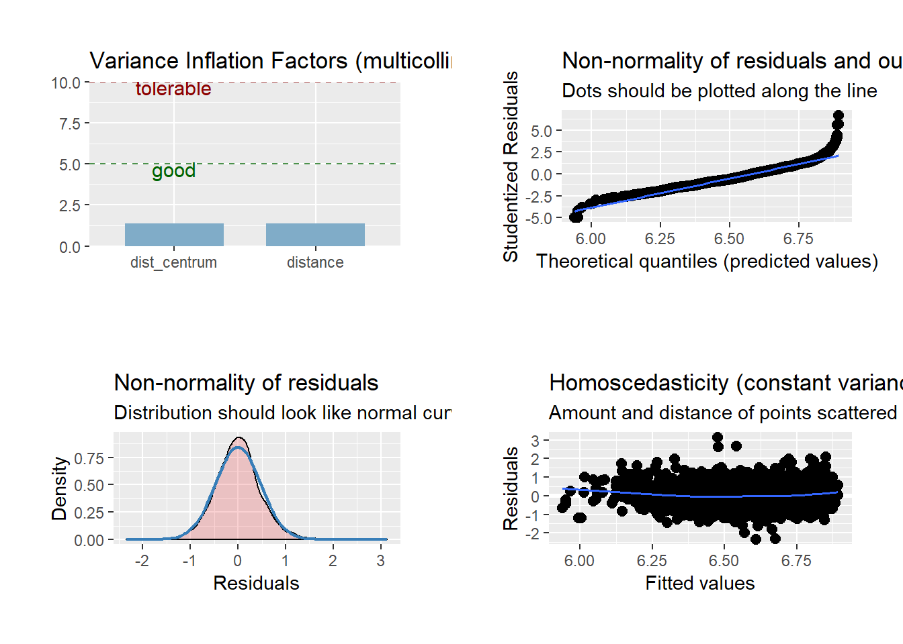
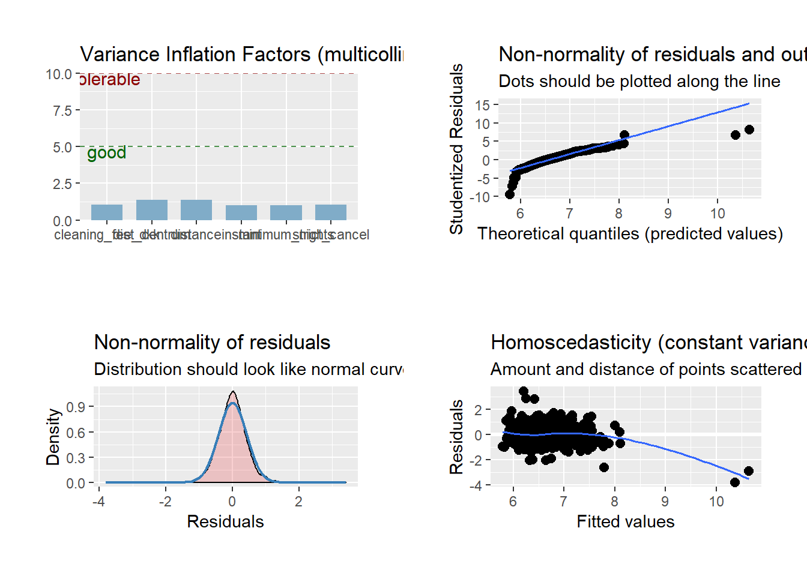

I used a collection of R packages designed for data science, in particular the following:
if(!require("tidyverse")){
# If the package is not already installed, it will be installed
install.packages("tidyverse", dependencies = TRUE)
# We load the package using libary
library("tidyverse")
}
library(magrittr)
library(car)
library(ggplot2)
library(stargazer)
library(dplyr)
library(foreign)Of course, I used more than the seven, but I will always mention them at the points where I needed them.
airbnb <- read_csv("data/listings.csv")You can glimpse (using the pipe %>% operator), or look at head and tail of the data:
airbnb %>% glimpse()
head(airbnb)
tail(airbnb)With the help of the kableExtra package, we can easily and nicely visualize our data. With the subscript [] we can address the data gradually.
library(magrittr)
library(kableExtra)
kable(airbnb[1:7,1:24]) %>% # [1:7,1:24] = first seven rows and first 24 columns
kable_styling(bootstrap_options = c("striped", "hover", "condensed", "responsive"),
full_width = F, font_size = 10) %>%
scroll_box(width = "910px", height = "400px")After we saw all variables with the kable-table, we can select and subset the data to a dataframe that consists only of the variables of interest.
airbnb_data <- airbnb %>% select(id, last_scraped, description, host_id, host_is_superhost,
host_has_profile_pic, host_identity_verified, neighbourhood,
neighbourhood_cleansed, latitude, longitude, property_type, room_type,
accommodates, bathrooms, bedrooms, beds, price, security_deposit,
cleaning_fee, guests_included, extra_people, minimum_nights,
number_of_reviews, first_review, last_review, review_scores_rating,
review_scores_accuracy, review_scores_cleanliness, review_scores_checkin,
review_scores_communication, review_scores_location, review_scores_value,
instant_bookable, cancellation_policy, calculated_host_listings_count,
reviews_per_month)Now the cleaning process begins.
# Necessary condition: host must be verified and listins must have at least one review
airbnb_clean <- airbnb_data %>%
filter(host_identity_verified == "TRUE" & number_of_reviews > 0)
# Cleaning or variables containing prices
airbnb_clean <- airbnb_clean %>%
mutate(cleaning_fee_dkk = as.numeric(gsub("[\\$,]", "", airbnb_clean$cleaning_fee))) %>%
mutate(price_dkk = as.numeric(gsub("[\\$,]", "", airbnb_clean$price))) %>%
mutate(extra_people_dkk = as.numeric(gsub("[\\$,]", "", airbnb_clean$extra_people))) %>%
mutate(security_deposit_dkk = as.numeric(gsub("[\\$,]", "", airbnb_clean$security_deposit))) %>%
filter(price_dkk > 0 & price_dkk < 17500)
# first dummies
airbnb_clean <- airbnb_clean %>% mutate(
superhost = case_when(
host_is_superhost == "TRUE" ~ 1,
host_is_superhost == "FALSE" ~ 0
),
instant = case_when(
instant_bookable == "TRUE" ~ 1,
instant_bookable == "FALSE" ~ 0
)
)
# Clean property type
airbnb_clean$property_type <- airbnb_clean$property_type %>%
str_replace(., " \\& ", "_") %>%
str_replace(., "\\/", "_") %>%
as_factor()
# two new variables
airbnb_clean <- airbnb_clean %>% mutate(
listing_duration = as.numeric(difftime(airbnb_clean$last_scraped, airbnb_clean$first_review, unit = "days")),
price_person = price_dkk/accommodates)
# Deleting Shared Rooms and creating two dummies and an index
airbnb_clean <- airbnb_clean %>% mutate(
rtype = case_when(
room_type == "Shared room" ~ NA_character_,
room_type == "Entire home/apt" ~ "Entire Apartment",
room_type == "Private room" ~ "Private"
),
home = case_when(
room_type == "Shared room" ~ NA_real_, # drop Shared Rooms
room_type == "Entire home/apt" ~ 1,
room_type == "Private room" ~ 0
),
strict_cancel = case_when(
cancellation_policy == "strict_14_with_grace_period" ~ 1,
cancellation_policy == "moderate" ~ 0,
cancellation_policy == "flexible" ~ 0
),
index = ((airbnb_clean$review_scores_accuracy + airbnb_clean$review_scores_cleanliness
+ airbnb_clean$review_scores_checkin +airbnb_clean$review_scores_communication
+ airbnb_clean$review_scores_location + airbnb_clean$review_scores_value)/6)) %>%
filter(!is.na(rtype))Scraping of metro data using the rvest and purrr package
library(rvest)
metroURL <- "https://en.wikipedia.org/wiki/List_of_Copenhagen_Metro_stations"
metro_scrap <- metroURL %>%
read_html %>%
html_nodes(xpath='//th') %>% html_nodes("a") %>% html_attr("href") %>% na.omit() %>%
paste0("https://en.wikipedia.org", .) #create link, we only need first 22 lists
# Using purrr instead of for-loops
library(purrr)
# Extract the geo locations and names of the metro stations
names <- map_df(metro_scrap[1:22], ~ tibble(names = read_html(.) %>% html_nodes("#firstHeading") %>% html_text())) %>%
distinct()
geo <- map_df(metro_scrap[1:22], ~ tibble(coor = read_html(.) %>% html_nodes(".geo") %>% html_text())) %>%
distinct()
# A function as a workaround of untidy geo dataframe
Numextract_coord <- function(string){
as.data.frame(as.numeric(unlist(regmatches(string, gregexpr("[[:digit:]]+\\.*[[:digit:]]*", string)))))
}
df <- Numextract_coord(geo$coor)
lng <- df %>% dplyr::filter(row_number() %% 2 == 0) ## Select even rows
lat <- df %>% dplyr::filter(row_number() %% 2 == 1) ## Select odd rows
metro_df <- cbind(names, lat,lng)
colnames(metro_df) <- c("metro","lat", "long")Visualisations withplotly
library(plotly)
library(viridis)
library(hrbrthemes)
# # using plotly
f <- list(
family = "Viridis 20",
size = 18,
color = "#440154FF"
)
x <- list(
title = "Copenhagen Neigbourhoods",
titlefont = f
)
y <- list(
title = "Number of Listings",
titlefont = f
)
room_neigh <- airbnb_clean %>%
filter(!is.na(neighbourhood)) %>%
group_by(neighbourhood) %>%
dplyr::count(room_type)
room_neigh %>%
plot_ly(type = "bar",
x = ~neighbourhood,
y = ~n,
color = ~room_type,
colors = viridis_pal(option = "D")(3)) %>%
layout(title = "AirBnB listings sorted after type and neighbourhood",
xaxis = x, yaxis = y)
# only 17 shared room's listed in the data
# Entire home = 6318
# private room = 1199Histograms and density plot of night price distributions.
price_apart <- airbnb_clean %>%
filter(price_dkk<2100 & room_type == "Entire home/apt") %>%
ggplot(aes(x=price_dkk)) +
stat_bin(breaks=seq(0,2100,50), fill="#69b3a2", color="#e9ecef", alpha=0.9) +
ggtitle("Night price distribution of Airbnb appartements") +
theme_ipsum() +
theme_ipsum_rc(grid_col = "gray90") +
theme(plot.title = element_text(size=12)) +
labs(x="Price in DKK (Danish krone)",
caption="")
price_privat <- airbnb_clean %>%
filter(price_dkk<2100 & room_type == "Private room") %>%
ggplot(aes(x=price_dkk)) +
stat_bin(breaks=seq(0,2100,50), fill="#74add1", color="#e9ecef", alpha=0.9) +
ggtitle("Night price distribution of Airbnb private rooms") +
theme_ipsum() +
theme_ipsum_rc(grid_col = "gray90") +
theme(plot.title = element_text(size=12)) +
labs(x="Price in DKK (Danish krone)",
caption="1 Euro = 7.4 DKK ")
density_plot <- ggplot(airbnb_clean, aes(x = log(airbnb_clean$price_dkk),
color = rtype)) +
geom_density(aes(fill = rtype, alpha = 0.5)) +
labs(x = "Nightly Rental Price (Log)", y = "Density",
title = "Price Density by Accommodation Type") +
theme_ipsum() +
theme_ipsum_rc(grid_col = "gray90")+
theme(plot.title = element_text(size=12),
legend.title = element_blank())Calculate the distance between listings and nearest metro station as well as distance between listing and the city center. I wrote an AirBnBCopenhagen package in order to simply especially the distance function.
library(AirBnBCopenhagen)
library(rvest)
library(geosphere)
metroURL <- "https://en.wikipedia.org/wiki/List_of_Copenhagen_Metro_stations"
metro_df <- geo_metro(metroURL)
airbnb_clean$distance <- AirBnBCopenhagen::distance(airbnb_clean$longitude,
airbnb_clean$latitude,
metro_df$long,
metro_df$lat)
plot_distance <- ggplot(airbnb_clean, aes(x= distance, y= log(price_dkk))) +
geom_point() +
geom_smooth(method = "lm") +
labs(x = "Distance to the next Metro station (in meters)",
y = "Nightly Rental Price (Log)",
title = "Price vs. Distance to the next metro") +
theme_ipsum() +
theme_ipsum_rc(grid_col = "gray90") +
theme(plot.title = element_text(size=12),
legend.title = element_blank())
# Distance to city center: nyhavn: 12.590659, 55.679687
nyhavn_lng <- 12.590659
nyhavn_lat <- 55.679687
airbnb_clean$dist_centrum <- AirBnBCopenhagen::distance(airbnb_clean$longitude,
airbnb_clean$latitude,
nyhavn_lng, nyhavn_lat)
plot_distance_c <- ggplot(airbnb_clean, aes(x= dist_centrum, y= log(price_dkk))) +
geom_point() +
geom_smooth(method = "lm") +
labs(x = "Distance to Nyhavn, City Center",
y = "Nightly Rental Price (Log)",
title = "Price vs. Distance to the City Center") +
theme_ipsum() +
theme_ipsum_rc(grid_col = "gray90") +
theme(plot.title = element_text(size=12),
legend.title = element_blank())Now we turn to mapping them in an interactive map using the leaflet package.
# leaflet package for R
library(leaflet)
library(maps)
library(rgdal)
library(leaflet.extras)
# Create CPH Long Lat
m <- leaflet() %>% setView(lng = 12.568337,
lat = 55.676098,
zoom = 12) # Copenhagens longitude and latitude
# For the pop up
nyhavn <- paste(sep = "<br/>",
#paste0("<img src='https://en.wikipedia.org/wiki/Nyhavn#/media/File:Nyhavn_MichaD.jpg", "' />"),
paste0("<b>Name: </b>", "Nyhavn"),
paste0("<b>Place: </b>", "City Center, Copenhagen"),
paste0("<a href='https://en.wikipedia.org/wiki/Nyhavn",
... = "'>Link</a>"))
map_nyhavn <- m %>%
addProviderTiles("Esri.WorldImagery", group="Background 1") %>%
addTiles(options = providerTileOptions(noWrap = TRUE), group="Background 2") %>%
addCircles(data=metro_df, lng = ~long, lat = ~lat,popup = ~metro,
fillColor="red", stroke = TRUE, fillOpacity = 0.8 ,
radius = 80, group="Metro Stations") %>%
addCircleMarkers(data = airbnb_clean, lng = ~ longitude, lat = ~ latitude,
radius = 1 , color="black",
fillColor = "#ffa500", stroke = TRUE, fillOpacity = 2,
group="AirBnB Listings",
clusterOptions = markerClusterOptions()) %>%
addLayersControl(overlayGroups = c("Metro Stations","AirBnB Listings") ,
baseGroups = c("Background 1","Background 2"),
options = layersControlOptions(collapsed = FALSE))%>%
suspendScroll()
map_nyhavn %>% addMarkers(lat =55.679687, lng = 12.590659, popup=nyhavn)The Neighbourhoods GEOJSON file which is also downloaded from InsideAirBnB.com provides geocoordinates of neighbourhoods of Copenhagen.
library(geojson)
library(jsonlite)
library(geojsonio)
nb_geo <- geojson_read("data/neighbourhoods.geojson", what = 'sp')
borough_data <- airbnb_clean %>%
group_by(neighbourhood_cleansed) %>%
nest() %>%
mutate(center_lon = map_dbl(data, ~median(.$longitude)),
center_lat = map_dbl(data, ~median(.$latitude)),
number_listings = map_int(data, nrow))
map_poly <- m %>%
addProviderTiles("Esri.WorldImagery",
group="Background 1") %>%
addTiles(options = providerTileOptions(noWrap = TRUE),
group="Background 2") %>%
addCircleMarkers(data=airbnb_clean, lng = ~ longitude,
lat = ~ latitude, radius=1 , color="black",
fillColor="#ffa500", stroke = TRUE,
fillOpacity = 2, group="AirBnB Listings",
clusterOptions = markerClusterOptions()) %>%
addPolygons(data = nb_geo, color = "#444444", weight = 2,
opacity = 1, group = "Polygon") %>%
addLayersControl(overlayGroups = c("AirBnB Listings", "Polygon", "neighbourhood"),
baseGroups = c("Background 1","Background 2"),
options = layersControlOptions(collapsed = FALSE)) %>%
addLabelOnlyMarkers(data = borough_data,
lng = ~center_lon, lat = ~center_lat,
label = ~neighbourhood_cleansed,
labelOptions = labelOptions(noHide = TRUE,
direction = 'top',
textOnly = TRUE,
opacity = 1,
group = "neighbourhood")) %>%
suspendScroll()Regression Analysis
set.seed(123)
library(sjPlot)
library(stargazer)
cph_data <- airbnb_clean[,c("price_dkk","index","strict_cancel",
"home","cleaning_fee_dkk","superhost",
"listing_duration", "instant",
"security_deposit_dkk",
"accommodates","minimum_nights" ,
"bathrooms", "distance", "dist_centrum")] %>% na.omit()
# Correlation Matrix
res <- cor(cph_data)
round(res, 2)
# Linear Regression model where dependent variable is in level-form
mod_no_log <- lm(price_dkk ~ distance + dist_centrum, data = airbnb_clean)
plot_mod_no_log <- plot_model(mod_no_log, type = "diag") %>% plot_grid()# Thus we take the log
mod1 <- lm(log(price_dkk) ~ distance + dist_centrum,data = airbnb_clean)
plot_mod1 <- plot_model(mod1, type = "diag") %>% plot_grid()
summary(mod1)
mod2 <- lm(log(price_dkk) ~ distance + dist_centrum+
home+ accommodates + bathrooms
,data = airbnb_clean)
summary(mod2)
plot_mod2 <-plot_model(mod2, type = "diag") %>% plot_grid()mod3 <- lm(log(price_dkk) ~ distance + dist_centrum
+home+ accommodates + bathrooms+
strict_cancel+ instant+ minimum_nights+cleaning_fee_dkk,
data = cph_data)
summary(mod3)
plot_mod3 <- plot_model(mod3, type = "diag") %>% plot_grid()
mod4 <- lm(log(price_dkk) ~ distance + dist_centrum +
home+ accommodates + bathrooms+
strict_cancel + instant + minimum_nights+cleaning_fee_dkk +
index + superhost +
listing_duration,
data = cph_data)
summary(mod4)
plot_mod4 <-plot_model(mod4, type = "diag") %>% plot_grid()# Regressiondiagnostic
library(lmtest)
library(sandwich)
coeftest(mod4, vcov = vcovHC(mod4))
bptest(mod4)
# This test shows that we can reject the null that the variance of the residuals is constant, thus heteroskedacity is present.
# To get the correct standard errors, we can use the
coeftest(mod4, vcov = vcovHC(mod4))
# Final stargazer output
stargazer(mod1, mod2, mod3, mod4,
type = "html",
title = "Linear Regression Model",
style = "ajs",
summary = NULL,
out.header = FALSE,
column.labels = c("Model 1", "Model 2", "Model 3", "Model 4"),
column.separate = c(1,1),
covariate.labels = c("Distance Metro",
"Distance Centre (Proxy)",
"Apartment (Dummy)",
"Accomodates",
"Number of Bathrooms",
"Strict Cancel",
"Instant Booking",
"Minimum nights",
"Cleaning Fee",
"Review Index",
"Superhost",
"Listings duration"),
dep.var.caption = "Dep. Var",
star.cutoffs = c(0.05,0.01,0.001),
dep.var.labels = c("Log Price per night in DKK"))This shows the version of R I am using as well as all of the packages.
# library(help = "AirBnBCopenhagen")
devtools::session_info()## - Session info ----------------------------------------------------------
## setting value
## version R version 3.5.0 (2018-04-23)
## os Windows 10 x64
## system x86_64, mingw32
## ui RTerm
## language (EN)
## collate German_Germany.1252
## ctype German_Germany.1252
## tz Europe/Berlin
## date 2019-01-31
##
## - Packages --------------------------------------------------------------
## ! package * version date lib
## abind 1.4-5 2016-07-21 [1]
## AirBnBCopenhagen * 1.13.1 2019-01-31 [1]
## assertthat 0.2.0 2017-04-11 [1]
## backports 1.1.3 2018-12-14 [1]
## bayesplot 1.6.0 2018-08-02 [1]
## bindr 0.1.1 2018-03-13 [1]
## bindrcpp * 0.2.2 2018-03-29 [1]
## broom 0.5.1 2018-12-05 [1]
## callr 3.1.1 2018-12-21 [1]
## car * 3.0-2 2018-08-23 [1]
## carData * 3.0-2 2018-09-30 [1]
## cellranger 1.1.0 2016-07-27 [1]
## class 7.3-14 2015-08-30 [2]
## classInt 0.3-1 2018-12-18 [1]
## cli 1.0.1 2018-09-25 [1]
## coda 0.19-2 2018-10-08 [1]
## codetools 0.2-15 2016-10-05 [2]
## coin 1.2-2 2017-11-28 [1]
## colorspace 1.4-0 2019-01-13 [1]
## crayon 1.3.4 2017-09-16 [1]
## crosstalk 1.0.0 2016-12-21 [1]
## curl 3.3 2019-01-10 [1]
## data.table 1.12.0 2019-01-13 [1]
## DBI 1.0.0 2018-05-02 [1]
## desc 1.2.0 2018-05-01 [1]
## devtools 2.0.1 2018-10-26 [1]
## digest 0.6.18 2018-10-10 [1]
## dplyr * 0.7.8 2018-11-10 [1]
## e1071 1.7-0 2018-07-28 [1]
## emmeans 1.3.1 2018-12-13 [1]
## estimability 1.3 2018-02-11 [1]
## evaluate 0.12 2018-10-09 [1]
## extrafont 0.17 2014-12-08 [1]
## extrafontdb 1.0 2012-06-11 [1]
## fansi 0.4.0 2018-10-05 [1]
## forcats * 0.3.0 2018-02-19 [1]
## foreign * 0.8-71 2018-07-20 [1]
## fs 1.2.6 2018-08-23 [1]
## gdtools 0.1.7 2018-02-27 [1]
## generics 0.0.2 2018-11-29 [1]
## geojson * 0.3.0 2019-01-18 [1]
## geojsonio * 0.6.0 2018-03-30 [1]
## geosphere * 1.5-7 2017-11-05 [1]
## ggeffects 0.8.0 2019-01-09 [1]
## ggplot2 * 3.1.0 2018-10-25 [1]
## ggridges 0.5.1 2018-09-27 [1]
## glmmTMB 0.2.3 2019-01-11 [1]
## glue 1.3.0 2018-07-17 [1]
## gridExtra 2.3 2017-09-09 [1]
## gtable 0.2.0 2016-02-26 [1]
## haven 2.0.0 2018-11-22 [1]
## highr 0.7 2018-06-09 [1]
## hms 0.4.2 2018-03-10 [1]
## hrbrthemes * 0.6.0 2019-01-21 [1]
## htmltools 0.3.6 2017-04-28 [1]
## htmlwidgets 1.3 2018-09-30 [1]
## httpuv 1.4.5.1 2018-12-18 [1]
## httr 1.4.0 2018-12-11 [1]
## jqr 1.1.0 2018-10-22 [1]
## jsonlite * 1.6 2018-12-07 [1]
## kableExtra * 1.0.0 2019-01-16 [1]
## knitr 1.21 2018-12-10 [1]
## labeling 0.3 2014-08-23 [1]
## later 0.7.5 2018-09-18 [1]
## lattice 0.20-35 2017-03-25 [2]
## lazyeval 0.2.1 2017-10-29 [1]
## leaflet * 2.0.2 2018-11-12 [1]
## leaflet.extras * 1.0.0 2019-01-26 [1]
## lme4 1.1-19 2018-11-10 [1]
## lmtest * 0.9-36 2018-04-04 [1]
## lubridate 1.7.4 2018-04-11 [1]
## magrittr * 1.5 2014-11-22 [1]
## maps * 3.3.0 2018-04-03 [1]
## maptools 0.9-4 2018-09-19 [1]
## markdown 0.9 2018-12-07 [1]
## MASS 7.3-49 2018-02-23 [2]
## Matrix 1.2-14 2018-04-13 [2]
## matrixStats 0.54.0 2018-07-23 [1]
## memoise 1.1.0 2017-04-21 [1]
## mime 0.6 2018-10-05 [1]
## minqa 1.2.4 2014-10-09 [1]
## mnormt 1.5-5 2016-10-15 [1]
## modelr 0.1.2 2018-05-11 [1]
## modeltools 0.2-22 2018-07-16 [1]
## multcomp 1.4-8 2017-11-08 [1]
## munsell 0.5.0 2018-06-12 [1]
## mvtnorm 1.0-8 2018-05-31 [1]
## nlme 3.1-137 2018-04-07 [1]
## nloptr 1.2.1 2018-10-03 [1]
## openxlsx 4.1.0 2018-05-26 [1]
## pillar 1.3.1 2018-12-15 [1]
## pkgbuild 1.0.2 2018-10-16 [1]
## pkgconfig 2.0.2 2018-08-16 [1]
## pkgload 1.0.2 2018-10-29 [1]
## plotly * 4.8.0 2018-07-20 [1]
## plyr 1.8.4 2016-06-08 [1]
## prediction 0.3.6.1 2018-12-04 [1]
## prettyunits 1.0.2 2015-07-13 [1]
## processx 3.2.1 2018-12-05 [1]
## promises 1.0.1 2018-04-13 [1]
## ps 1.3.0 2018-12-21 [1]
## psych 1.8.12 2019-01-12 [1]
## purrr * 0.2.5 2018-05-29 [1]
## pwr 1.2-2 2018-03-03 [1]
## R6 2.3.0 2018-10-04 [1]
## RColorBrewer 1.1-2 2014-12-07 [1]
## Rcpp 1.0.0 2018-11-07 [1]
## readr * 1.3.1 2018-12-21 [1]
## readxl 1.2.0 2018-12-19 [1]
## remotes 2.0.2 2018-10-30 [1]
## rgdal * 1.3-6 2018-10-16 [1]
## rgeos 0.4-2 2018-11-08 [1]
## rio 0.5.16 2018-11-26 [1]
## rlang 0.3.1 2019-01-08 [1]
## rmarkdown 1.11 2018-12-08 [1]
## rprojroot 1.3-2 2018-01-03 [1]
## rstudioapi 0.9.0 2019-01-09 [1]
## Rttf2pt1 1.3.7 2018-06-29 [1]
## rvest * 0.3.2 2016-06-17 [1]
## sandwich * 2.5-0 2018-08-17 [1]
## scales 1.0.0 2018-08-09 [1]
## selectr 0.4-1 2018-04-06 [1]
## sessioninfo 1.1.1 2018-11-05 [1]
## sf 0.7-2 2018-12-20 [1]
## shiny 1.2.0 2018-11-02 [1]
## sjlabelled 1.0.16 2019-01-10 [1]
## sjmisc 2.7.7 2019-01-02 [1]
## sjPlot * 2.6.2 2018-12-18 [1]
## sjstats 0.17.3 2019-01-07 [1]
## snakecase 0.9.2 2018-08-14 [1]
## sp * 1.3-1 2018-06-05 [1]
## stargazer * 5.2.2 2018-05-30 [1]
## stringdist 0.9.5.1 2018-06-08 [1]
## stringi 1.2.4 2018-07-20 [1]
## stringr * 1.3.1 2018-05-10 [1]
## survival 2.41-3 2017-04-04 [2]
## testthat 2.0.1 2018-10-13 [1]
## TH.data 1.0-9 2018-07-10 [1]
## tibble * 2.0.1 2019-01-12 [1]
## tidyr * 0.8.2 2018-10-28 [1]
## tidyselect 0.2.5 2018-10-11 [1]
## tidyverse * 1.2.1 2017-11-14 [1]
## D TMB 1.7.15 2018-11-09 [1]
## units 0.6-2 2018-12-05 [1]
## usethis 1.4.0 2018-08-14 [1]
## utf8 1.1.4 2018-05-24 [1]
## V8 1.5 2017-04-25 [1]
## viridis * 0.5.1 2018-03-29 [1]
## viridisLite * 0.3.0 2018-02-01 [1]
## webshot 0.5.1 2018-09-28 [1]
## withr 2.1.2 2018-03-15 [1]
## xfun 0.4 2018-10-23 [1]
## xml2 * 1.2.0 2018-01-24 [1]
## xtable 1.8-3 2018-08-29 [1]
## yaml 2.1.19 2018-05-01 [1]
## zip 1.0.0 2017-04-25 [1]
## zoo * 1.8-4 2018-09-19 [1]
## source
## CRAN (R 3.5.0)
## local
## CRAN (R 3.5.1)
## CRAN (R 3.5.2)
## CRAN (R 3.5.1)
## CRAN (R 3.5.1)
## CRAN (R 3.5.1)
## CRAN (R 3.5.2)
## CRAN (R 3.5.2)
## CRAN (R 3.5.1)
## CRAN (R 3.5.1)
## CRAN (R 3.5.1)
## CRAN (R 3.5.0)
## CRAN (R 3.5.2)
## CRAN (R 3.5.2)
## CRAN (R 3.5.1)
## CRAN (R 3.5.0)
## CRAN (R 3.5.1)
## Github (cran/colorspace@74fa33f)
## CRAN (R 3.5.1)
## CRAN (R 3.5.1)
## CRAN (R 3.5.2)
## CRAN (R 3.5.2)
## CRAN (R 3.5.1)
## CRAN (R 3.5.1)
## CRAN (R 3.5.1)
## CRAN (R 3.5.1)
## CRAN (R 3.5.2)
## CRAN (R 3.5.1)
## CRAN (R 3.5.2)
## CRAN (R 3.5.0)
## CRAN (R 3.5.2)
## CRAN (R 3.5.0)
## CRAN (R 3.5.0)
## CRAN (R 3.5.2)
## CRAN (R 3.5.1)
## CRAN (R 3.5.1)
## CRAN (R 3.5.1)
## CRAN (R 3.5.1)
## CRAN (R 3.5.2)
## CRAN (R 3.5.0)
## CRAN (R 3.5.1)
## CRAN (R 3.5.1)
## CRAN (R 3.5.2)
## CRAN (R 3.5.1)
## CRAN (R 3.5.1)
## CRAN (R 3.5.2)
## CRAN (R 3.5.1)
## CRAN (R 3.5.1)
## CRAN (R 3.5.1)
## CRAN (R 3.5.2)
## CRAN (R 3.5.1)
## CRAN (R 3.5.1)
## CRAN (R 3.5.2)
## CRAN (R 3.5.1)
## CRAN (R 3.5.1)
## CRAN (R 3.5.2)
## CRAN (R 3.5.2)
## CRAN (R 3.5.2)
## CRAN (R 3.5.2)
## CRAN (R 3.5.2)
## CRAN (R 3.5.2)
## CRAN (R 3.5.0)
## CRAN (R 3.5.1)
## CRAN (R 3.5.0)
## CRAN (R 3.5.1)
## Github (rstudio/leaflet@e780e4b)
## Github (bhaskarvk/leaflet.extras@503f7ef)
## CRAN (R 3.5.2)
## CRAN (R 3.5.1)
## CRAN (R 3.5.1)
## CRAN (R 3.5.1)
## CRAN (R 3.5.1)
## CRAN (R 3.5.1)
## CRAN (R 3.5.2)
## CRAN (R 3.5.0)
## CRAN (R 3.5.0)
## CRAN (R 3.5.2)
## CRAN (R 3.5.1)
## CRAN (R 3.5.1)
## CRAN (R 3.5.1)
## CRAN (R 3.5.0)
## CRAN (R 3.5.1)
## CRAN (R 3.5.1)
## CRAN (R 3.5.1)
## CRAN (R 3.5.1)
## CRAN (R 3.5.0)
## CRAN (R 3.5.1)
## CRAN (R 3.5.1)
## CRAN (R 3.5.1)
## CRAN (R 3.5.2)
## CRAN (R 3.5.1)
## CRAN (R 3.5.1)
## CRAN (R 3.5.1)
## CRAN (R 3.5.1)
## CRAN (R 3.5.1)
## CRAN (R 3.5.2)
## CRAN (R 3.5.1)
## CRAN (R 3.5.2)
## CRAN (R 3.5.1)
## CRAN (R 3.5.2)
## CRAN (R 3.5.2)
## CRAN (R 3.5.1)
## CRAN (R 3.5.1)
## CRAN (R 3.5.1)
## CRAN (R 3.5.0)
## CRAN (R 3.5.1)
## CRAN (R 3.5.2)
## CRAN (R 3.5.2)
## CRAN (R 3.5.1)
## CRAN (R 3.5.2)
## CRAN (R 3.5.2)
## CRAN (R 3.5.2)
## CRAN (R 3.5.2)
## CRAN (R 3.5.2)
## CRAN (R 3.5.1)
## CRAN (R 3.5.2)
## CRAN (R 3.5.0)
## CRAN (R 3.5.1)
## CRAN (R 3.5.1)
## CRAN (R 3.5.1)
## CRAN (R 3.5.1)
## CRAN (R 3.5.1)
## CRAN (R 3.5.2)
## CRAN (R 3.5.1)
## CRAN (R 3.5.2)
## CRAN (R 3.5.2)
## CRAN (R 3.5.2)
## CRAN (R 3.5.2)
## CRAN (R 3.5.1)
## CRAN (R 3.5.1)
## CRAN (R 3.5.0)
## CRAN (R 3.5.1)
## CRAN (R 3.5.2)
## CRAN (R 3.5.1)
## CRAN (R 3.5.0)
## CRAN (R 3.5.2)
## CRAN (R 3.5.1)
## CRAN (R 3.5.2)
## CRAN (R 3.5.2)
## CRAN (R 3.5.2)
## CRAN (R 3.5.2)
## CRAN (R 3.5.1)
## CRAN (R 3.5.2)
## CRAN (R 3.5.1)
## CRAN (R 3.5.1)
## CRAN (R 3.5.1)
## CRAN (R 3.5.1)
## CRAN (R 3.5.1)
## CRAN (R 3.5.1)
## CRAN (R 3.5.1)
## CRAN (R 3.5.2)
## CRAN (R 3.5.1)
## CRAN (R 3.5.1)
## CRAN (R 3.5.0)
## CRAN (R 3.5.1)
## CRAN (R 3.5.1)
##
## [1] C:/Users/Julian/Documents/R/win-library/3.5
## [2] C:/Program Files/R/R-3.5.0/library
##
## D -- DLL MD5 mismatch, broken installation.